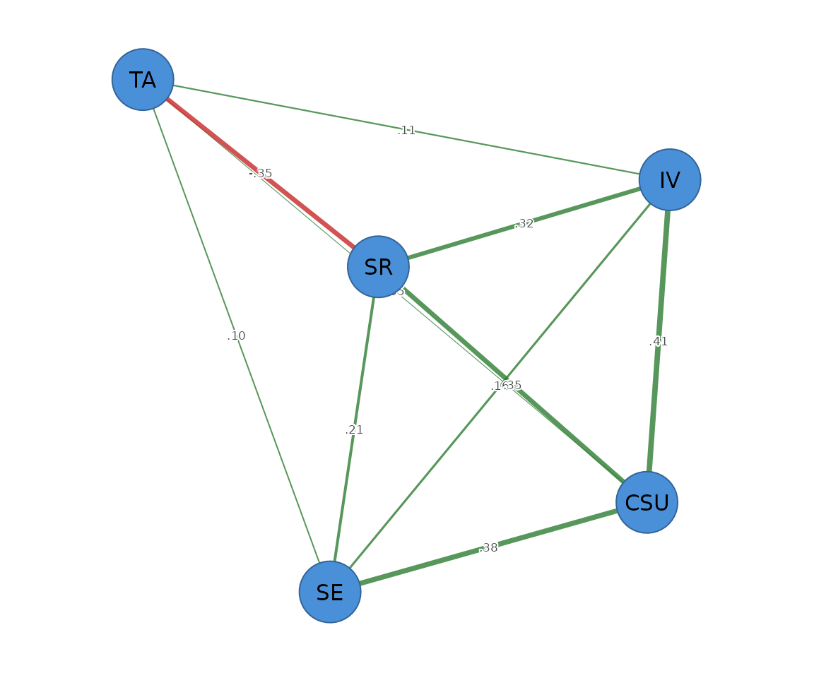

vignettes/gaussian-graphical-models.Rmd
gaussian-graphical-models.RmdNetwork analysis lets researchers chart relations, map connections, and discover clusters among interacting components, and it has become a central method for understanding complex systems. Its early successes were with social networks — people linked by who talks to whom. To go beyond who-interacts-with-whom and reason about variables and their associations, we need a different, probabilistic kind of network.
In a probabilistic, or psychological, network the nodes are variables — constructs, behaviours, attitudes, or scale scores — and the edges are the probabilistic associations between them (Saqr, Beck & López-Pernas, 2024; Borsboom et al., 2021). This vignette focuses on the most widely used such model, the Gaussian graphical model (GGM), a network whose edges are partial correlations.
A partial correlation measures the association between two variables after controlling for every other variable in the network — their conditional dependence, ceteris paribus. Suppose we study five learning constructs: motivation, achievement, engagement, self-regulation, and well-being. An edge between well-being and achievement then means the two are associated beyond what their shared relations with motivation, engagement, and self-regulation already explain. Equally informative is what is missing: when there is no edge between two variables, they are conditionally independent given the rest. So both the presence and the absence of an edge are interpretable and meaningful — a property that sets these networks apart from a plain table of correlations (Epskamp & Fried, 2018; Epskamp, Waldorp, Mõttus & Borsboom, 2018).
In practice many of the small partial correlations in a network are just noise. Regularization removes those negligible edges — shrinking them to exactly zero — leaving a sparse network that is easier to read and more likely to replicate. Beyond estimating the edges, psychological-network methods also supply tools to judge how trustworthy a network is: bootstrapping the accuracy of edge weights and centralities, and gauging how well a network is expected to replicate (Epskamp, Borsboom & Fried, 2018).
If we simply invert the sample correlation matrix, every pair of variables gets a non-zero partial correlation: the resulting network is fully connected, and many of those edges are non-zero only by sampling chance. Such a dense graph is hard to interpret and unstable, especially when the number of variables is large relative to the sample size — the usual situation in psychological data.
The graphical lasso fixes this. It applies a penalty that shrinks small partial correlations all the way to zero, so that only the edges with real support in the data survive. How hard to shrink is itself chosen from the data, by the extended Bayesian information criterion (EBIC), which trades off model fit against the number of edges. The result is a sparse, interpretable network. (The exact penalty and selection criterion are given in Mathematical foundations at the end of this vignette.)
The illustrations use SRL_GPT, one of five data sets
that ship with the package. Each is a sample of 300 cases of Motivated
Strategies for Learning Questionnaire (MSLQ) construct scores, generated
by a large language model in a study of self-regulated learning
simulated through LLM-generated survey responses. The five constructs
are cognitive strategy use (CSU), intrinsic value
(IV), self-efficacy (SE), self-regulation
(SR), and test anxiety (TA); each score is the
mean of that construct’s Likert items on the 1–7 scale.
head(SRL_GPT)
#> CSU IV SE SR TA
#> 1 5.307692 5.666667 5.777778 5.333333 4.00
#> 2 5.846154 6.444444 6.000000 5.777778 4.00
#> 3 6.615385 6.666667 6.222222 6.333333 3.25
#> 4 5.692308 6.555556 6.333333 5.555556 4.50
#> 5 4.384615 5.555556 4.888889 4.777778 4.00
#> 6 4.846154 5.444444 5.666667 5.111111 3.50psychnet() is deliberately simple to use: in the common
case you supply only two arguments — the data and the
method. Here method = "glasso" fits the
EBIC-regularized graphical lasso. Everything else has a sensible
default, so a complete analysis is a single readable call; the remaining
arguments (covered under A note on options and Mathematical
foundations) are there only when you want fine-grained control.
(Coming from qgraph/bootnet? The spelling
"EBICglasso" is accepted as an alias for
"glasso".)
net <- psychnet(SRL_GPT, method = "glasso")
net
#> <psychnet> glasso network
#> nodes: 5 edges: 10 (undirected)
#> lambda: 0.00861 gamma: 0.5
#> optimality (KKT residual): 2.21e-10The fitted partial-correlation network is the tidy edge list returned
by as.data.frame():
as.data.frame(net)
#> from to weight
#> 1 CSU IV 0.41166866
#> 2 CSU SE 0.38290223
#> 3 IV SE 0.15992605
#> 4 CSU SR 0.35481359
#> 5 IV SR 0.31909443
#> 6 SE SR 0.20767208
#> 7 CSU TA 0.04906668
#> 8 IV TA 0.11058735
#> 9 SE TA 0.09871818
#> 10 SR TA -0.34985157Each weight is the estimated partial correlation between two
constructs, after conditioning on the other three. The structure is
readable: CSU, IV, SE, and
SR form a positively connected cluster, while test anxiety
(TA) is negatively tied to self-regulation
(SR) — more anxiety goes with less self-regulation, over
and above everything else in the network.
Centrality summarizes how important each node is. Node strength is the sum of the absolute edge weights at a node — how strongly it is connected overall. Expected influence is the signed sum, which keeps the direction of the edges, so a node with strong negative connections can have low or negative influence even when its strength is high.
net_centralities(net)
#> node strength expected_influence
#> 1 CSU 1.1984512 1.19845117
#> 2 IV 1.0012765 1.00127649
#> 3 SE 0.8492185 0.84921854
#> 4 SR 1.2314317 0.53172852
#> 5 TA 0.6082238 -0.09147935SR and CSU are the most strongly connected
constructs; TA, with its single strong negative edge, has
the lowest expected influence.
Predictability asks a complementary question: how much of each node’s variance is explained by its neighbours in the network (Haslbeck & Waldorp, 2018)? It tells us whether the connections around a node are actually informative about it.
net_predict(net)
#> node type metric predictability accuracy
#> 1 CSU gaussian R2 0.8217840 NA
#> 2 IV gaussian R2 0.7690346 NA
#> 3 SE gaussian R2 0.7142811 NA
#> 4 SR gaussian R2 0.7786477 NA
#> 5 TA gaussian R2 0.1421163 NAMost constructs are highly predictable from their neighbours
(variance explained above 0.7), whereas test anxiety (TA)
is comparatively isolated (about 0.14), consistent with its single
strong edge.
Passing the fitted object to cograph::splot() with
psych_styling = TRUE draws the network with a spring
layout, labelled nodes, and the conventional colour coding (green for
positive edges, red for negative). For a graphical-lasso network the
object already carries each node’s predictability, and the plot draws it
automatically as a ring around the node — the visual analogue of the
net_predict() table above.
cograph::splot(net, psych_styling = TRUE)
The defaults above (Pearson correlations, pairwise-complete handling
of missing data) match the common bootnet workflow, but several options
are worth knowing. For Likert data, cor_method = "auto"
switches to the polychoric/polyserial correlation used by
qgraph and bootnet. For speed,
native = FALSE dispatches the inner solve to the optional
Fortran glasso package. The full list of arguments and
their defaults is tabulated in Mathematical foundations,
below.
The two-argument call above uses every default. Because the
substantive choices are just arguments, we can change one and watch its
effect. Here we re-estimate the network from rank-based (Spearman)
correlations and a lighter EBIC penalty (gamma = 0.25
rather than 0.5):
net2 <- psychnet(SRL_GPT, method = "glasso", cor_method = "spearman", gamma = 0.25)
as.data.frame(net2)
#> from to weight
#> 1 CSU IV 0.41037571
#> 2 CSU SE 0.42434529
#> 3 IV SE 0.12821527
#> 4 CSU SR 0.32164519
#> 5 IV SR 0.34602908
#> 6 SE SR 0.18400655
#> 7 IV TA 0.07280225
#> 8 SE TA 0.07509761
#> 9 SR TA -0.23654039Comparing this with the default Pearson fit shows the difference
concretely: the default keeps all ten edges, including the very weak
CSU–TA link (about 0.05), whereas this fit
drops it and returns nine. The strong
CSU/IV/SE/SR cluster
and the negative SR–TA edge survive either
way; what changes is which borderline edges are retained. The
correlation type and the penalty therefore decide the fate of weak
edges, even when the backbone is stable.
A second, more direct control is threshold, a post-hoc
absolute-weight floor that simply removes any edge smaller than a chosen
size. With threshold = 0.1 the three weak TA
edges fall away and only the eight strongest remain:
as.data.frame(psychnet(SRL_GPT, method = "glasso", threshold = 0.1))
#> from to weight
#> 1 CSU IV 0.4116687
#> 2 CSU SE 0.3829022
#> 3 IV SE 0.1599260
#> 4 CSU SR 0.3548136
#> 5 IV SR 0.3190944
#> 6 SE SR 0.2076721
#> 7 IV TA 0.1105874
#> 8 SR TA -0.3498516Construct scores are continuous but usually skewed and bounded rather
than exactly Gaussian. When joint normality is doubtful, the
nonparanormal model relaxes it: it assumes the
variables are jointly Gaussian only after unknown monotone
transformations of each variable, estimates those transformations from
the ranks, and then applies the identical EBIC graphical lasso. This is
method = "huge", and it certifies against the same
optimality conditions:
certificate(psychnet(SRL_GPT, method = "huge"))
#> method certificate kind certified
#> 1 huge 2.471425e-10 kkt TRUEThis section is a technical reference. It states the model, the estimator, the selection criterion, the implementation, and the optimality certificate precisely, for readers who want the definitions and equations behind the tutorial above. It can be skipped on a first reading.
Let follow a multivariate normal distribution with covariance matrix and precision (concentration) matrix . The GGM encodes the conditional independence structure of in an undirected graph on the variables. Its defining property is the pairwise Markov property: a zero in the precision matrix is exactly a conditional independence,
that is, and are independent given all remaining variables (Lauritzen, 1996). The off-diagonal entries of are in one-to-one correspondence with the partial correlations,
so an edge in a GGM is a non-zero partial correlation between two variables after conditioning on every other variable in the system. In the psychometric network literature this object is the central model: nodes are measured variables and edges are conditional (partial-correlation) associations (Epskamp & Fried, 2018).
The maximum-likelihood estimate of from a sample covariance matrix inverts directly and is therefore dense. The graphical lasso (Yuan & Lin, 2007; Banerjee, El Ghaoui & d’Aspremont, 2008; Friedman, Hastie & Tibshirani, 2008) instead maximizes an -penalized Gaussian log-likelihood,
where penalizes the off-diagonal entries and is a tuning parameter. The penalty shrinks small partial correlations exactly to zero, producing a sparse graph and controlling sampling variability when is large relative to . The objective is strictly concave in , so its maximizer is unique.
The penalty is selected over a path of candidate values by minimizing the extended Bayesian information criterion (EBIC; Foygel & Drton, 2010), which augments the ordinary BIC with a term that penalizes the size of the model space:
where
is the maximized Gaussian log-likelihood,
is the number of non-zero edges, and
is a hyperparameter (the gamma argument, default
)
governing the strength of the model-space penalty. Setting
recovers ordinary BIC; larger
favours sparser graphs. The candidate path is logarithmically spaced
between the smallest penalty that yields the empty graph and a fraction
lambda_min_ratio of it, with nlambda points.
In psychnets the defaults are nlambda = 100
and lambda_min_ratio = 0.01.
The estimator is a clean-room reimplementation in pure base R. The
package imports only the base packages stats and
parallel; it does not depend on glasso,
qgraph, glmnet, or Matrix, and
contains no compiled code. The solver is the covariance
block-coordinate-descent algorithm of Friedman, Hastie & Tibshirani
(2008). Writing
for the model covariance, the algorithm cycles over the columns of
;
for each column the off-diagonal block is updated by solving an ordinary
lasso regression via coordinate descent (with the diagonal held fixed at
the diagonal of
,
since the penalty is off-diagonal only), and the precision matrix is
reconstructed from the converged
and the lasso coefficients.
Selection of
proceeds in two tiers. The EBIC criterion only needs to identify which
edges are active at each candidate
,
and the lasso zeros inactive edges exactly, so the path is first scanned
at a loose convergence tolerance (scan_tol = 1e-4). The
single
that minimizes EBIC is then refit at a tight tolerance
(refit_tol = 1e-8), so the returned estimate is the
converged optimum of the convex objective rather than a coarse path
point.
Because the graphical-lasso objective is strictly convex, its optimum is unique and is characterized exactly by the first-order (Karush–Kuhn–Tucker) stationarity conditions. Writing , the optimal estimate satisfies
The certificate() verb returns the maximum absolute
violation of these conditions as a tidy one-row data frame:
certificate(net)
#> method certificate kind certified
#> 1 glasso 2.213401e-10 kkt TRUEThe residual is at the order of machine precision. Because the
minimizer is unique, a residual this small confirms that the reported
precision matrix satisfies the first-order optimality conditions of the
penalized objective to numerical precision. This is a reproducibility
and verification diagnostic — a numerical-analysis check that the solver
converged — rather than a substantive property of the data; the
kind column records that it is a KKT residual and
certified flags whether it falls below the tolerance
tol (default
).
The native argument selects the inner fixed-penalty
solver. The default, native = TRUE, is psychnets’ own
pure-R block-coordinate-descent solver described above. Setting
native = FALSE (which requires the optional Fortran
glasso package, listed under Suggests)
dispatches each fixed-penalty solve to that established package instead,
producing numerically equivalent graph structure at Fortran speed; the
optimality residual then reflects the glasso package’s own
convergence tolerance rather than the tighter base-R refit.
Only data and method are required;
everything else has a default. The full set of arguments for the
graphical lasso is:
| Argument | Default | Meaning |
|---|---|---|
data |
— | Numeric matrix or data frame (rows are observations). |
cor_matrix, n
|
NULL |
A precomputed
correlation matrix and its sample size, used in place of
data. |
cor_method |
"pearson" |
Correlation estimator: "pearson",
"spearman", "kendall", or "auto"
(polychoric/polyserial cor_auto(), for ordinal data). |
gamma |
0.5 |
EBIC hyperparameter ; larger values give sparser graphs, is ordinary BIC. |
nlambda |
100 |
Number of penalties on the path. |
lambda_min_ratio |
0.01 |
Smallest as a fraction of the penalty that empties the graph. |
threshold |
0 |
Post-hoc absolute-weight floor; edges below it are set to zero. |
na_method |
"pairwise" |
Missing data: "pairwise" (pairwise-complete
correlations with a nearest-positive-definite projection) or
"listwise" (complete-case deletion). |
native |
TRUE |
Inner solver: TRUE = psychnets’ pure-R solver,
FALSE = the glasso Fortran package. |
labels |
NULL |
Node names. |
Researchers migrating from qgraph::EBICglasso() can map
these names onto the qgraph arguments with the package’s
net_crosswalk() helper.
For a Gaussian graphical model, node predictability is available in closed form from the precision matrix (Haslbeck & Waldorp, 2018): the proportion of variance of node explained by the remaining nodes is
where
is the diagonal of the precision matrix and
the corresponding variance. net_predict() reports these
per-node values, requiring no access to the raw data.
The nonparanormal (Liu, Lafferty & Wasserman, 2009) assumes that
the variables are jointly Gaussian after unknown monotone marginal
transformations. Estimating those transformations by a rank-based
Gaussianization and applying the identical EBIC graphical lasso to the
transformed correlation matrix yields a GGM that is robust to monotone
departures from normality. This is method = "huge", which
certifies against the same KKT conditions as the Gaussian case.
Banerjee, O., El Ghaoui, L., & d’Aspremont, A. (2008). Model selection through sparse maximum likelihood estimation for multivariate Gaussian or binary data. Journal of Machine Learning Research, 9, 485–516.
Borsboom, D., Deserno, M. K., Rhemtulla, M., Epskamp, S., Fried, E. I., McNally, R. J., Robinaugh, D. J., Perugini, M., Dalege, J., Costantini, G., Isvoranu, A.-M., Wysocki, A. C., van Borkulo, C. D., van Bork, R., & Waldorp, L. J. (2021). Network analysis of multivariate data in psychological science. Nature Reviews Methods Primers, 1, 1–18.
Epskamp, S., Borsboom, D., & Fried, E. I. (2018). Estimating psychological networks and their accuracy: A tutorial paper. Behavior Research Methods, 50(1), 195–212.
Epskamp, S., & Fried, E. I. (2018). A tutorial on regularized partial correlation networks. Psychological Methods, 23(4), 617–634.
Epskamp, S., Waldorp, L. J., Mõttus, R., & Borsboom, D. (2018). The Gaussian graphical model in cross-sectional and time-series data. Multivariate Behavioral Research, 53(4), 453–480.
Foygel, R., & Drton, M. (2010). Extended Bayesian information criteria for Gaussian graphical models. In Advances in Neural Information Processing Systems (Vol. 23, pp. 604–612).
Friedman, J., Hastie, T., & Tibshirani, R. (2008). Sparse inverse covariance estimation with the graphical lasso. Biostatistics, 9(3), 432–441.
Haslbeck, J. M. B., & Waldorp, L. J. (2018). How well do network models predict observations? On the importance of predictability in network models. Behavior Research Methods, 50(2), 853–861.
Lauritzen, S. L. (1996). Graphical Models. Oxford: Oxford University Press.
Liu, H., Lafferty, J., & Wasserman, L. (2009). The nonparanormal: Semiparametric estimation of high dimensional undirected graphs. Journal of Machine Learning Research, 10, 2295–2328.
Saqr, M., Beck, E., & López-Pernas, S. (2024). Psychological networks: A modern approach to the analysis of learning and complex learning processes. In M. Saqr & S. López-Pernas (Eds.), Learning Analytics Methods and Tutorials: A Practical Guide Using R (Chapter 19). Springer. https://lamethods.org/book1/chapters/ch19-psychological-networks/ch19-psych.html
Yuan, M., & Lin, Y. (2007). Model selection and estimation in the Gaussian graphical model. Biometrika, 94(1), 19–35.